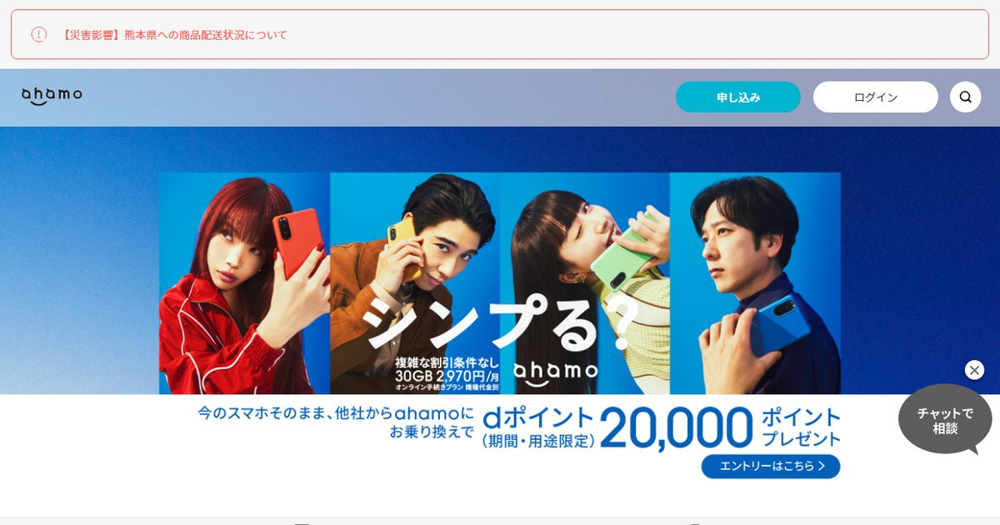
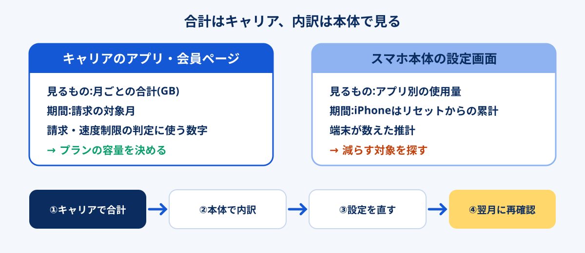

スマホのプランを見直そうとして最初に止まるのが「自分は毎月何ギガ使っているのか」です。iPhoneの設定画面を開くと「120GB」のような大きな数字が出て驚き、キャリアのアプリを開くと「8.4GB」と出て、どちらが本当なのか分からなくなる。この食い違いには理由があり、見る場所さえ間違えなければ確認は数分で終わります。
この記事では、iPhone・Android本体での確認手順と、各社のアプリ・会員ページで見る場所を整理したうえで、確認した数字をどう読んでプランを決めるかまでをつなげます。2026年は楽天モバイルに続いてahamoも12月から使った量で料金が変わる段階制に移るため、「何ギガ使っているか」がそのまま毎月の請求額に響く年です。
プランを決めるための数字はキャリアのアプリ(または会員ページ)の「月ごとのデータ利用量」です。iPhoneの設定画面の数字は「最後にリセットしてからの累計」なので、そのままでは月の使用量になりません。キャリア側で直近3か月の値を控え、平均ではなく「いちばん多かった月」を基準に容量を選ぶと、超過で追加購入する失敗をほぼ避けられます。
使った量で料金が決まる新しいahamoの料金を見る公式サイトへ →PR・申し込み前に料金プランと契約条件を確認できます


通信量を確認できる場所は3つ。正しいのはどれか
スマホのデータ通信量は、主に3か所で見られます。それぞれ「何を」「どの期間で」数えているかが違うので、同じ月でも数字が一致しないのが普通です。
| 確認する場所 | 数えている期間 | 正確さ | 向いている用途 |
|---|---|---|---|
| キャリアのアプリ・会員ページ | 請求の対象月(多くは毎月1日〜末日) | 請求・速度制限の判定に使われる数字 | プランの容量を決める |
| スマホ本体の設定画面 | iPhone:最後にリセットしてから今日まで/Android:指定した集計期間 | 端末が自分で数えた推計。キャリアの数字とずれることがある | どのアプリが使っているかの内訳を見る |
| 自宅のWi-Fiルーター・回線の管理画面 | 機器ごとに異なる | スマホのモバイル通信は含まれない | 自宅回線(光・ホームルーター)の使用量を見る |
プランの容量を決めるときに使うのは、表の1行目、キャリア側の数字です。速度制限がかかるかどうかも、段階制プランで料金がいくらになるかも、キャリアが数えた量で判定されます。au・ソフトバンクのサポートページも、本体の表示は端末による計測なので実際の利用量と異なる場合がある、という趣旨を案内しています。
一方で、本体の画面にはアプリごとの内訳が出るという強みがあります。キャリアの数字で「多すぎる」と分かったら、本体の画面で犯人のアプリを探す。この役割分担で使い分けると迷いません。

iPhoneで確認する手順と「累計」の罠
-
「設定」→「モバイル通信」を開く
iOSのバージョンや地域によって「モバイルデータ通信」と表示されることもあります。画面の中ほどに「現在までの合計」と、その下にアプリごとの使用量が並びます。
-
「現在までの合計」がいつからの数字かを確かめる
画面のいちばん下に「最後のリセット」の日付が出ています。ここが数か月前、あるいは購入日のままなら、表示されている合計はその期間すべての累計です。iPhoneは請求の締め日に合わせて自動ではリセットされません。
-
月ごとに見たいなら、締め日の翌日に「統計情報をリセット」
同じ画面の最下部にある「統計情報をリセット」を押すと、その日から数え直します。キャリアの集計が1日〜末日なら毎月1日に押すと、本体の数字がキャリアの月と揃います。リセットすると過去の数字は消えるので、必要なら押す前に画面を保存しておきます。
iPhoneの数字が異様に大きく見える原因は、ほぼこの「累計」です。購入から2年リセットしていなければ、月10GBの人でも合計は200GBを超えます。数字を見て慌てて大容量プランに変える前に、リセット日付を確認してください。
iPhoneの画面で、あわせて見ておきたい項目が2つあります。
- Wi-Fiアシスト:モバイル通信画面の下のほうにあるスイッチで、Wi-Fiの電波が弱いと自動でモバイル通信に切り替える機能です。オンだと、自宅にいるつもりでもギガが減っていることがあります。スイッチの下に、この機能で使った量が表示されます。
- インターネット共有(テザリング):パソコンやタブレットをiPhone経由でつないだ分は、アプリ一覧の中に「インターネット共有」として出ます。在宅勤務でテザリングを使っている人は、ここが一番大きいケースが多い項目です。
Androidで確認する手順
Androidは機種とOSのバージョンでメニュー名が少しずつ違います。Googleのヘルプで案内されている標準的な流れは次のとおりです。
-
「設定」→「ネットワークとインターネット」→「インターネット」
Pixelでは「ネットワークとインターネット」→「SIM」の順になることがあります。Galaxyなどは「接続」→「データ使用量」のように別の名前の場合があるので、設定画面の検索で「データ使用量」と入れるのが早道です。
-
契約中のSIM(キャリア名)の横にある設定を開く
画面の上部に、集計期間内に使ったモバイルデータの合計が表示されます。
-
「アプリのデータ使用量」で内訳と期間を見る
グラフとアプリ別の量が出ます。期間は下向きの矢印で切り替えられ、機種によっては集計を始める日(使用サイクル)を指定できます。キャリアの締め日に合わせておくと、毎月の数字を比べやすくなります。
Androidは同じ画面で「データ使用量の警告」や「上限」を設定できる機種が多く、上限に近づいたら通知を出すようにしておくと、段階制プランで意図せず上の段に上がるのを防げます。ただし本体の集計とキャリアの集計は一致しないことがあるため、警告はキャリアの容量より少し手前(たとえば容量の8割)に置くのが安全です。
各社のアプリ・会員ページで見る場所
プランを決めるための「月の合計」は、契約しているキャリアのアプリか会員ページで確認します。主要ブランドの確認先をまとめました。いずれもログインすると、トップ画面か「データ量」「ご利用状況」といった項目に当月の利用量が出ます。
| 契約先 | 確認する場所 | 見るときのポイント |
|---|---|---|
| ドコモ | My docomo(アプリ・Web) | 当月の利用量と、過去の月の推移を確認 |
| ahamo | ahamoアプリ・ahamo公式サイトのログイン後の画面 | 当月分のほか、詳細から過去3か月分を日別で見られる。ホーム画面のウィジェットにも対応 |
| au | My au(アプリ・Web) | 本体表示は推計のため、実際の量はMy auで確認するよう公式FAQが案内 |
| UQモバイル | My UQ mobile(アプリ・Web) | トクトクプラン2は5GB以下かどうかで料金が変わるので、5GB前後の月を要チェック |
| ソフトバンク・ワイモバイル | My SoftBank/My Y!mobile | 本体のリセットは請求の起算日に合わせるよう公式FAQが案内 |
| LINEMO | LINEMOの会員ページ(My Menu) | ベストプランは3GBを超えるかどうかで料金の段が変わる |
| 楽天モバイル | my 楽天モバイル(アプリ・Web) | 3GB・20GBの境目で料金が上がる。月末の残り日数と合わせて見る |
| 格安SIM(MVNO) | 各社のマイページ・公式アプリ | 日別グラフが出る会社が多い。データの繰り越し分を含むかどうかを確認 |
※ 2026年10月時点の各社の案内をもとにした目安です。アプリの名称や画面の配置は更新で変わることがあります。キャリアの数字も、反映まで時間がかかったりメンテナンスで更新が遅れたりすることがあります。
ahamoは2026年12月1日から、30GB 2,970円の1本の料金から40GBまで3,135円/60GBまで4,125円/120GBまで5,115円(税込)の段階制に変わり、契約中の人にも自動で適用されます。大盛りオプションは2026年11月30日で終了します。改定後は「月に何GB使ったか」でその月の請求が決まるので、40GBと60GBの境目の手前にいる人ほど、毎月の確認が効いてきます。公式には、次の段に移る前に知らせる「データ量到達通知サービス」と、指定した段を超えたら速度を1Mbpsに制限して請求をその段で止める「上限設定オプション」(いずれも無料)が用意されています。改定の詳細は2026年のネット回線 値上げまとめにまとめています。
3か月の記録シートの作り方
1か月分の数字だけでプランを決めると、旅行や在宅勤務、端末の買い替えで偏った月に引きずられます。キャリアのアプリで次の4つを控えるだけで、判断に必要な材料はそろいます。
| 控える項目 | 記入例 | 何に使うか |
|---|---|---|
| 直近3か月それぞれの利用量 | 7月 6.2GB/8月 14.8GB/9月 7.9GB | 平均と最大月を出す |
| 3か月の平均 | 9.6GB | 普段の使い方の目安 |
| いちばん多かった月とその理由 | 8月 14.8GB(帰省中に動画) | 容量を決める基準 |
| 追加データを買った回数 | 1回(1GB) | 今の容量が足りているかの判定 |
ポイントは3行目です。平均の9.6GBで10GBのプランを選ぶと、8月のような月に毎回足りなくなります。追加データの1GBあたりの単価は、プランに含まれる1GBあたりより高く設定されているのが一般的なので、容量は「平均」ではなく「最大月」に合わせるほうが年間では安く済むケースが多くなります。
反対に、最大月が一時的な事情(引越し直後で自宅回線がなかった、など)とはっきり分かっているなら、その月を除いて考えても構いません。理由をメモしておくのはそのためです。
数字からプランを決める判定表
記録シートの「最大月」と「月ごとのばらつき」から、向いているプランの型を判定します。2026年は定額型(決まった容量まで同じ料金)と段階制(使った量で料金が変わる)の両方が主要ブランドにあるため、ばらつきの大きさが選び方を分けます。
| 最大月の利用量 | 月ごとのばらつきが小さい | 月ごとのばらつきが大きい |
|---|---|---|
| 3GB以下 | 小容量の定額(LINEMOベストプランの3GB 990円、格安SIMの小容量など) | 段階制の最下段(楽天モバイルの3GBまで1,078円) |
| 3〜20GB | 20GB前後の定額、またはデータ量を細かく選べる格安SIM | 段階制(楽天モバイルの20GBまで2,178円) |
| 20〜40GB | 30GBの定額(LINEMOベストプランV 2,970円など) | 2026年12月以降のahamo(40GBまで3,135円) |
| 40GB超 | 無制限・大容量プラン | 段階制の無制限(楽天モバイル 3,278円)か、自宅に固定回線を置いてスマホは小容量にする |
※ 料金は2026年10月時点の各社公式表記(税込)をもとにした目安です。ahamoは2026年12月1日からの料金。割引・オプション・通話料で実際の請求額は変わります。
「ばらつきが大きい」の目安は、3か月の最大月が最小月の2倍以上あるかどうかです。たとえば最小6GB・最大15GBなら段階制が合いやすく、少ない月は料金も下がります。反対に毎月25GB前後で安定している人は、段階制にしても下の段に落ちる月がないので、定額の30GBプランのほうが分かりやすく安く収まります。
もうひとつ見落としやすいのが、家でもモバイル通信を使っているかどうかです。最大月が40GBを超えていて、その多くが自宅での動画やテザリングなら、スマホのプランを上げるより自宅にWi-Fiを置くほうが通信費全体は下がることがあります。テザリングで自宅回線の代わりができる条件はテザリングを固定回線の代わりにできる人の条件、工事なしで置ける回線はホームルーターの比較にまとめています。
- 使った数字はキャリアのアプリの月ごとの値か(本体の累計ではないか)
- 直近3か月の最大月が、新しいプランの容量に収まるか
- 追加データを買った月がないか(あるなら容量が足りていない)
- 段階制なら、境目(3GB・20GB・40GBなど)のすぐ上に毎月いないか
- 通話の多さ(かけ放題の要否)も合わせて確認したか
思ったより多いときの原因チェック
キャリアの数字が予想より多かったら、本体の「アプリ別」の画面で上位のアプリを見ます。多くのケースで、次のどれかに当てはまります。
| 上位に出ているもの | よくある原因 | 対策 |
|---|---|---|
| 動画・SNSアプリ | 外出先で高画質のまま再生、自動再生がオン | アプリ側でモバイル通信時の画質を下げる。画質ごとの消費量は動画の通信量の記事で計算できます |
| インターネット共有 | テザリングでパソコンをつないでいる | パソコンのOS更新やクラウド同期を、テザリング中は止める |
| 写真・クラウド | 写真のバックアップがモバイル通信でも動いている | バックアップをWi-Fi接続時のみに設定する |
| システムサービス・ソフトウェア更新 | OSやアプリの更新をモバイル通信でダウンロード | 自動更新をWi-Fi時のみにする |
| Wi-Fiアシストの使用量 | 自宅のWi-Fiが弱く、自動でモバイル通信に切り替わっている | ルーターの置き場所や再起動で電波を改善する(ルーターの再起動の正しいやり方) |
特に最後の行は、数字を見るまで気づきにくい項目です。自宅にWi-Fiがあるのに毎月20GB以上使っている場合は、家の中でWi-Fiにつながっていない時間がないかを疑ってください。部屋によって電波が届かないなら、プランの容量を増やすより中継器やメッシュWi-Fiで家の電波を整えるほうが根本的な解決になります。
原因を潰したあとの1か月は、もう一度キャリアの数字を見て、本当に減ったかを確認します。設定を変えた翌月の数字が、新しいプランを選ぶときのいちばん確かな材料になります。料金の見直し全体の手順はスマホ料金が高いときの見直し手順に、乗り換え先の候補は格安SIM5社の比較にまとめています。
記録した最大月にちょうど合う容量が大手のプランにないときは、1GB単位や小刻みな容量で選べる格安SIMが候補になります。
LIBMOの料金プランを見る※ 広告(PR)。通話料・SIM発行手数料・初月の日割りの有無は会社ごとに違います。
よくある質問
iPhoneの「現在までの合計」が100GBを超えています。使いすぎですか?
本体の数字とキャリアの数字が違うのはなぜですか?
Wi-Fiにつないでいるときの通信量はギガに含まれますか?
何か月分の記録を見ればプランを決められますか?
段階制プランと定額プランはどちらが得ですか?
まとめ:合計はキャリア、内訳は本体で見る
- プランを決める数字はキャリアのアプリの月ごとの利用量
- iPhoneの設定画面はリセットからの累計。締め日の翌日にリセットすると月の数字になる
- 直近3か月を控え、容量は平均ではなく最大月に合わせる
- 月ごとのばらつきが大きいなら段階制、小さいなら定額が合いやすい
- 多すぎるときは本体のアプリ別画面で原因を探し、設定を直してから翌月の数字を見る
数字が出たら、行き先の比較は格安SIM比較へ。自宅回線と合わせた通信費全体を下げたいなら一人暮らしのネット代の記事の構成例が参考になります。
- au よくあるご質問:iPhone/iPadでデータ通信量を確認する方法(2026年10月24日確認)
- ソフトバンク よくあるご質問:iPhone本体でデータ通信量を確認する方法(2026年10月24日確認)
- Google Pixel ヘルプ:モバイルデータ使用量を管理する(2026年10月24日確認)
- ahamo公式:ahamoアプリ・新しいahamo(2026年12月1日からの料金)(2026年10月確認)
- 楽天モバイル・LINEMO・UQモバイル各社の公式料金ページ(2026年10月確認)